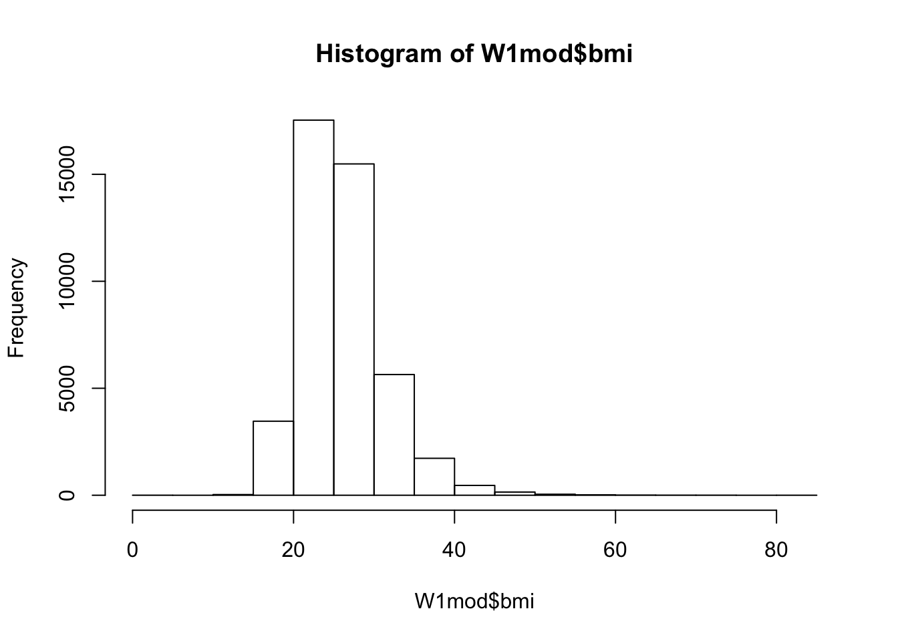

5 Transform data
Please read ch.5 (Data transformation) from R for Data Science - http://r4ds.had.co.nz/transform.html
Once you have imported your data in R you will usually want to clean it, transform it and produce some data summaries. All these tasks can be accomplished with base R. However, it is usually more convenient to use specialised packages for this, such as dplyr and data.table. In this module we will use dplyr.
Let us read the data from wave 1 of the Understanding Society.
library(tidyverse)
W1 <- read_tsv("data/UKDA-6614-tab/tab/us_w1/a_indresp.tab")5.1 The pipe operator (%>%)
Let us start with tabulating a variable for political interest.
table(W1$a_vote6)##
## -9 -7 -2 -1 1 2 3 4
## 118 3262 42 42 4882 15862 14017 12769Now if we want to convert this table into a table of proportions we need to do the following.
prop.table(table(W1$a_vote6))##
## -9 -7 -2 -1 1
## 0.0023139977 0.0639683100 0.0008236263 0.0008236263 0.0957367533
## 2 3 4
## 0.3110562027 0.2748754755 0.2504020081Imagine now that you want to use the kable() function from the knitr package to print this table. We will need to convert the table into a data frame first and then apply the function kable.
library(knitr)
kable(data.frame(prop.table(table(W1$a_vote6))), digits = 2)| Var1 | Freq |
|---|---|
| -9 | 0.00 |
| -7 | 0.06 |
| -2 | 0.00 |
| -1 | 0.00 |
| 1 | 0.10 |
| 2 | 0.31 |
| 3 | 0.27 |
| 4 | 0.25 |
At this point we have four nested functions and the code becomes difficult to read. With the pipe operator (%>%) you can achieve the same result with the following code.
W1$a_vote6 %>%
table() %>%
prop.table() %>%
data.frame() %>%
kable(digits = 2)| . | Freq |
|---|---|
| -9 | 0.00 |
| -7 | 0.06 |
| -2 | 0.00 |
| -1 | 0.00 |
| 1 | 0.10 |
| 2 | 0.31 |
| 3 | 0.27 |
| 4 | 0.25 |
The pipe operator passes the results of the execution of a function to the next function. This makes code easier to write, read and understand.
5.2 Select variables
Imagine we want to select some variables from a data frame. Indeed, W1 is too large for our purposes and we do not need all the variables today. Let us select the variables for sex, age, place of birth and measures of weight and height.
In base R you could do the following:
newW1 <- subset(W1, select = c("pidp", "a_sex", "a_dvage", "a_ukborn", "a_hlht", "a_hlhtf",
"a_hlhti", "a_hlhtc", "a_hlwt", "a_hlwts", "a_hlwtp", "a_hlwtk"))
head(newW1, 3)## # A tibble: 3 x 12
## pidp a_sex a_dvage a_ukborn a_hlht a_hlhtf a_hlhti a_hlhtc a_hlwt
## <int> <int> <int> <int> <int> <int> <int> <int> <int>
## 1 68001367 1 39 1 1 6 0 -8 1
## 2 68004087 1 59 5 1 5 11 -8 2
## 3 68006127 2 39 1 1 5 1 -8 1
## # ... with 3 more variables: a_hlwts <int>, a_hlwtp <int>, a_hlwtk <int>With dplyr the following code will produce the same result.
newW1 <- W1 %>%
select(pidp:a_dvage, a_ukborn, a_hlht:a_hlwtk)
head(newW1, 3)## # A tibble: 3 x 12
## pidp a_sex a_dvage a_ukborn a_hlht a_hlhtf a_hlhti a_hlhtc a_hlwt
## <int> <int> <int> <int> <int> <int> <int> <int> <int>
## 1 68001367 1 39 1 1 6 0 -8 1
## 2 68004087 1 59 5 1 5 11 -8 2
## 3 68006127 2 39 1 1 5 1 -8 1
## # ... with 3 more variables: a_hlwts <int>, a_hlwtp <int>, a_hlwtk <int>Note that I combined together the variables that follow each other in the original data frame with :.
5.3 Select cases
Another common task is to select cases based on some conditions. For example, we may want to have a data frame that only indludes women aged 18 to 25.
In base R you can do the following.
women <- newW1[newW1$a_sex == 2 & (newW1$a_dvage >= 18 & newW1$a_dvage <=25),]In dplyr the code will be the following:
newW1 %>%
filter(a_sex == 2 & (a_dvage >= 18 & a_dvage <=25)) %>%
head(3)## # A tibble: 3 x 12
## pidp a_sex a_dvage a_ukborn a_hlht a_hlhtf a_hlhti a_hlhtc a_hlwt
## <int> <int> <int> <int> <int> <int> <int> <int> <int>
## 1 68010207 2 24 1 1 5 5 -8 1
## 2 68010891 2 23 1 -7 -7 -7 -7 -7
## 3 68023131 2 23 1 1 5 9 -8 1
## # ... with 3 more variables: a_hlwts <int>, a_hlwtp <int>, a_hlwtk <int>I am not saving the new data frame as an object here and just print the first three rows from the data to demonstrate the result.
Imagine now you want to select only people born in Wales or Northern Ireland and aged over 40.
newW1 %>%
filter((a_ukborn == 3 | a_ukborn == 4) & a_dvage > 40) %>%
head(3)## # A tibble: 3 x 12
## pidp a_sex a_dvage a_ukborn a_hlht a_hlhtf a_hlhti a_hlhtc a_hlwt
## <int> <int> <int> <int> <int> <int> <int> <int> <int>
## 1 68051011 2 41 3 1 5 5 -8 1
## 2 68062567 2 50 4 1 5 1 -8 1
## 3 68189727 2 95 3 1 5 4 -8 1
## # ... with 3 more variables: a_hlwts <int>, a_hlwtp <int>, a_hlwtk <int>5.4 Create new variables
Let us create a new dummy variable scotland that takes the value of 1 if a person was born in Scotland and 0 otherwise.
I will not show you how to do this in base R (I assume you know this already) and will focus on dplyr.
newW1 %>%
mutate(scotland = ifelse(a_ukborn == 2, 1, 0)) %>%
head(3)## # A tibble: 3 x 13
## pidp a_sex a_dvage a_ukborn a_hlht a_hlhtf a_hlhti a_hlhtc a_hlwt
## <int> <int> <int> <int> <int> <int> <int> <int> <int>
## 1 68001367 1 39 1 1 6 0 -8 1
## 2 68004087 1 59 5 1 5 11 -8 2
## 3 68006127 2 39 1 1 5 1 -8 1
## # ... with 4 more variables: a_hlwts <int>, a_hlwtp <int>, a_hlwtk <int>,
## # scotland <dbl>Here I use the function ifelse that evaluates a condition that a_ukborn == 2 and returns 1 if this is true and 0 if this is false.
Now let us imagine we want to code a variable for the place of birth converting numeric values into text and coding missing values as NA.
newW1 %>%
mutate(placeBirth = recode(a_ukborn,
"1" = "England",
"2" = "Scotland",
"3" = "Wales",
"4" = "Northern Ireland",
"5" = "not UK",
.default = NA_character_)) %>%
head(3)## # A tibble: 3 x 13
## pidp a_sex a_dvage a_ukborn a_hlht a_hlhtf a_hlhti a_hlhtc a_hlwt
## <int> <int> <int> <int> <int> <int> <int> <int> <int>
## 1 68001367 1 39 1 1 6 0 -8 1
## 2 68004087 1 59 5 1 5 11 -8 2
## 3 68006127 2 39 1 1 5 1 -8 1
## # ... with 4 more variables: a_hlwts <int>, a_hlwtp <int>, a_hlwtk <int>,
## # placeBirth <chr>.default = NA_character_ codes all the values that were not specifically matched (all negative values in our case) to missing values.
We can compare the distributions of the original and recoded variables to make sure that everything is correct.
newW1 %>%
mutate(placeBirth = recode(a_ukborn,
"1" = "England",
"2" = "Scotland",
"3" = "Wales",
"4" = "Northern Ireland",
"5" = "not UK",
.default = NA_character_)) %>%
count(a_ukborn, placeBirth)## # A tibble: 8 x 3
## a_ukborn placeBirth n
## <int> <chr> <int>
## 1 -9 <NA> 6
## 2 -2 <NA> 2
## 3 -1 <NA> 8
## 4 1 England 33480
## 5 2 Scotland 3567
## 6 3 Wales 2154
## 7 4 Northern Ireland 2033
## 8 5 not UK 9744Now let us have a slightly more complicated case. We may want to code a variable for the body mass index (BMI) which is defined as weight in kilograms divided by the square of height in meters:
\[BMI = \frac{weight_{kg}}{{height_{m}}^2}\]
The problem is that in our data set some people gave their weight in kilograms (a_hlwtk) and some in stones and pounds (a_hlwts and a_hlwtp). Similarly, some people gave their height in centimeters (a_hlhtc) and others in feet and inches (a_hlhtf and a_hlhti). We need to start with converting the measures for everyone to kilograms and centimeters and then we will be able to create a variable for BMI.
These are the formulas for conversion:
1 feet = 30.48cm 1 inch = 2.54cm
1 stone = 6.35kg 1 pound = 0.45kg
W1mod <- newW1 %>%
# create a variable for height in cm
# if height is measured in feet and inches (a_hlht == 1) and is not missing (a_hlhtf > 0),
# convert it to centimeters
# otherwise if it is already measured in cm (a_hlht == 2) leave as it is
# if a_hlht is neither 1 nor 2 code it to missing
mutate(heightcm = ifelse(a_hlht == 1 & a_hlhtf > 0,
a_hlhtf*30.48 + a_hlhti*2.54,
ifelse(a_hlht == 2 & a_hlhtc > 0,
a_hlhtc, NA))) %>%
# now same with weight
mutate(weightkg = ifelse(a_hlwt == 1 & a_hlwts > 0,
a_hlwts*6.35 + a_hlwtp*0.45,
ifelse(a_hlwt == 2 & a_hlwtk > 0,
a_hlwtk, NA))) %>%
# now create a variable for BMI
mutate(bmi = weightkg / (heightcm / 100)^2)Let us now look at the distribution of BMI.
hist(W1mod$bmi)
5.5 Sort data
We can sort data with arrange.
We may want to sort the data by BMI.
W1mod %>%
arrange(bmi) %>%
select(pidp, bmi) %>%
head(5)## # A tibble: 5 x 2
## pidp bmi
## <int> <dbl>
## 1 614152207 3.581188
## 2 1158204567 4.357708
## 3 1292128539 10.098136
## 4 1088805127 11.732290
## 5 478722727 12.050592We can also sort cases by BMI in the decreasing order, separatey for each sex.
W1mod %>%
arrange(a_sex, desc(bmi)) %>%
select(pidp, a_sex, bmi) %>%
head(5)## # A tibble: 5 x 3
## pidp a_sex bmi
## <int> <int> <dbl>
## 1 952435887 1 73.90269
## 2 1632274047 1 66.37745
## 3 340892847 1 65.19274
## 4 1292157767 1 63.10072
## 5 340443367 1 62.982225.6 Summarise data
dplyr is also helpful when you want to create a data frame with summary statistics. For example, we may want to calculate mean and median BMI in our sample and the proportion of people with BMI over 30 (considered obese).
W1mod %>%
# create a binary variable for being obese
mutate(bmiover30 = ifelse(bmi > 30, 1, 0)) %>%
summarise(
meanBMI = mean(bmi, na.rm=TRUE),
medianBMI = median(bmi, na.rm=TRUE),
proportionObese = mean(bmiover30, na.rm=TRUE)
)## # A tibble: 1 x 3
## meanBMI medianBMI proportionObese
## <dbl> <dbl> <dbl>
## 1 26.04229 25.37527 0.1807575We can also produce summary statistics by group. Let us look at the BMI summaries by age group and by sex.
W1mod %>%
# create a variabe for being obese
mutate(bmiover30 = ifelse(bmi > 30, 1, 0)) %>%
# create a variable for age groups
mutate(agegr = ifelse(a_dvage >= 18 & a_dvage <= 35, "18-35",
ifelse((a_dvage >= 36 & a_dvage <= 55), "36-55",
ifelse(a_dvage >= 56, ">55", NA)))) %>%
# filter out people with missing age
filter(!is.na(agegr)) %>%
# group by sex and age
group_by(a_sex, agegr) %>%
# calculate summary statistics
summarise(
meanBMI = mean(bmi, na.rm=TRUE),
medianBMI = median(bmi, na.rm=TRUE),
proportion = mean(bmiover30, na.rm=TRUE)
)## # A tibble: 6 x 5
## # Groups: a_sex [?]
## a_sex agegr meanBMI medianBMI proportion
## <int> <chr> <dbl> <dbl> <dbl>
## 1 1 >55 26.95474 26.43255 0.1967436
## 2 1 18-35 24.99670 24.46032 0.1179154
## 3 1 36-55 27.25879 26.59878 0.2157322
## 4 2 >55 26.65251 25.96255 0.2168707
## 5 2 18-35 24.48421 23.37306 0.1262995
## 6 2 36-55 26.45840 25.38130 0.2179358We can see that people aged 18 to 35 have the lowest proportion of obese people both among men and women.
Let us now save W1mod for future use.
saveRDS(W1mod, "myData/W1mod.rds")